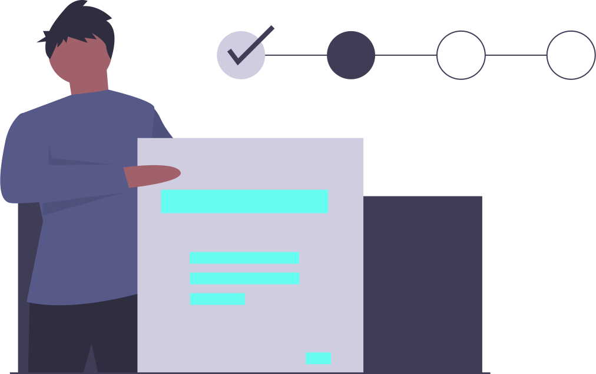

Uživatelské průzkumy

Doba, kdy se na měření oblíbenosti posílaly do schránek dotazníky, je už dávno pryč. V dnešní době se k měření oblíbenosti používají digitální uživatelské průzkumy. Aplikace jako Trendaro, Vám navíc práci zpříjemní zábavnými a zajímavými fakty ze světa tak, aby jste se při práci nenudili.